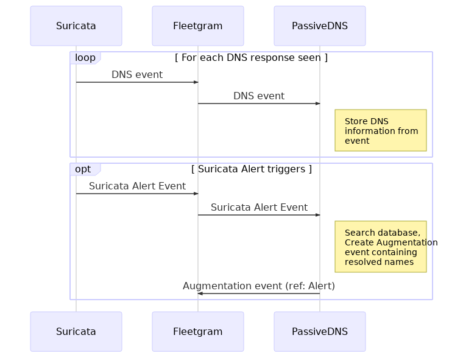

PassiveDNS uses DNS events from suricata to store the DNS information. The database of collected address and name mappings is then used to augment name resolution information to Suricata IDS Instrument alerts. Whenever Suricata alert is received, PassiveDNS will submit another event containing names, if found, to IP addresses in Suricata alerts. This event might give forensic information about the names an address has been associated with.
PassiveDNS also provides simple HTTP API which allows users to query the database that has been collected. The API provides methods for
| Developer | SensorFleet Oy |
| Categories | Traffic Analysis, Traffic Recording, DNS |
| Network access type | None |
| Required interfaces | None |
| Dependencies | Suricata IDS |
| Data retention | PassiveDNS Instrument stores DNS information up to the configured period. |
| Management UI | Yes |
Following sequence shows the operation of PassiveDNS with Suricata. Whenever DNS response is seen, Suricata will send DNS event to internal message bus. This Event is received by PassiveDNS, which stores the DNS records to its database. Later, if Suricata alert is triggered, Suricata will create and alert. PassiveDNS will receive this alert and queries database of stored DNS records and then creates an augmentation Event containing this information.
